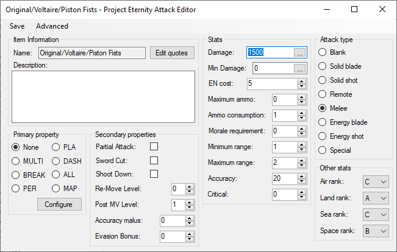

Attack Editor
You can adjust the stats of your attack here, properties, type, attributes and quotes.
For a more in depth guide, go here
Primary property: The primary property defines how the attack can be used to add more variety.
Primary property PLA: Platoon attack for the squad system, allows a wingman unit to his this attack to support the leader during battle.
Primary property MULTI: Split the total damage into multiple smaller attacks where hit rate is calculated for each of them. Can be configured.
Primary property DASH: The unit will move forward during the attack and can push the enemy. Can be configured.
Primary property BREAK: Target the enemy base HP directly. Even if the enemy has passive bonuses that give +100000 HP, if its HP was at 1 before the bonuses, it will die by a single point of damage.
Primary property ALL: Targets the leader and all wingmans of a squad instead of just the leader.
Primary property PER: Persistent projectile attack that will stay on the map after used if it didn’t hit anything. It moves on its own during turns and can be affected by gravity and bounce on contact. Has infinite range. Can be configured.
Primary property FOR: Forward attack, can only attack between specified angles in front of the unit. Can be configured.
Primary property MAP: Define a zone to attack, can be directional, anywhere or around the unit. Can add a delay so it hits multiple turns later. Does not cause battle animations. Can be configured.
Secondary Property: Small tweaks affecting how the damage is dealt.Partial Attack: Do damage based on accuracy. 70% hit rate will result in doing 70% of the damage, it is impossible to do no damage unless the hit rate is 0%.
Post MV: Allow to use attack after moving. Leave it to 1 as default as it used for more advanced features. More details in the guide.
Re-Move: Allow to move after attacking is there are unused movement points left. Leave it as 0 to keep it disabled. More details in the guide.
Accuracy Malus: Reduce accuracy of the attack if used after moving.
Evasion Malus: Improve evasion if hit by a counterattack if attacking after moving.
Damage: Base damage of the attack. The final damage is affected by the units, pilot, terrain, enemy and other bonuses.
Min damage: Flat damage always done even if it miss. If min damage is set to 200 and the enemy picked the evade choice, he get 0 damage, if he defended he takes 100 damage, if he counterattacked he takes 200 damage.
EN cost: How much EN the attack will use.
Maximum ammo: How many time the attack can be used without refill.
Ammo consumption: How many ammunition attacking actually use. Only meaningful if using secondary or charged attacks as they charge the same ammo pool.
Morale requirement: How much Will the pilot need to have to use the attack.
Minimum/maximum range: How close/far the attack can be used.
Accuracy: Flat hit rate bonus. 10 means +10% accuracy.
Critical: Flat critical change bonus. 10 means +10% chances of critical.
Attack type: Melee attacks will use the MEL attributes of the pilot, ranged attacks will use the RNG attributes of the pilots. Energy attacks cannot be used under water.
Terrain ranks: Decide the terrain ranks for the attack.
Edit quotes button: Add custom quote sets that can be used by an animation.
Advanced button: Assign skills to the attack, handle explosions, secondary and charged attacks. More details in the guide.